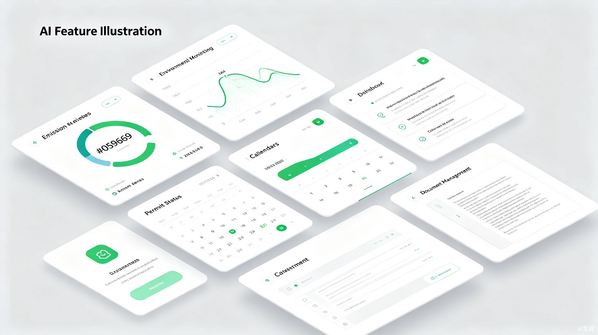

CORE FEATURES
十大核心功能
覆盖排污许可、在线监测、碳排放、固废管理等全场景
AI 合规对话
不是通用聊天 AI。懂《排污许可管理条例》33条到44条、懂 GB 13456 到 HJ 944、懂钢铁水泥火电化工每个行业。
- 文本模型 DeepSeek V4 + 视觉模型 Kimi Vision 双引擎
- 上传许可证截图、监测报表照片即可自动识别

督察整改三类型闭环
- 立行立改 / 跟踪督办 / 工程建设三类工单
- AI 四维审查 + 动态升级（未按期整改自动升级为立案查处）
合规日历
- 月历视图 + 时间轴视图
- 颜色标记紧急程度（红/橙/绿）
- 自然语言创建日程
自动任务
- 日报、月报、季报、年报自动生成
- 基于企业 5 类台账数据自动汇总
排污许可证全生命周期
- 自动登录全国排污许可证管理信息平台
- 到期 60 天前自动预警
- 变更、延续、重新申请材料清单内置
档案库
- 企业环境档案统一管理
- 附件自动归档、按阶段分类、AI 分析、导出下载
知识库
- 50 个常见环保合规问答
- 13 个行业许可映射
- 刑事风险案例库
政务平台直达
- 12 个政务平台一键直达
MCP 工具连接
- 7 个自动化工具
- 6 模块合规审计 + 20 项许可证数据提取
安全至上
- 核心合规引擎锁定，无法修改
- 机器绑定授权码